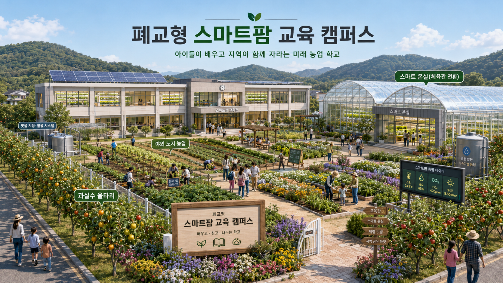
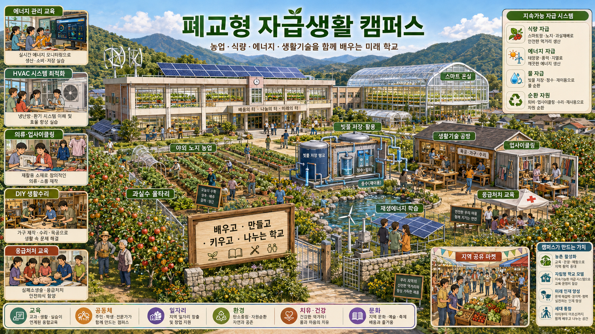
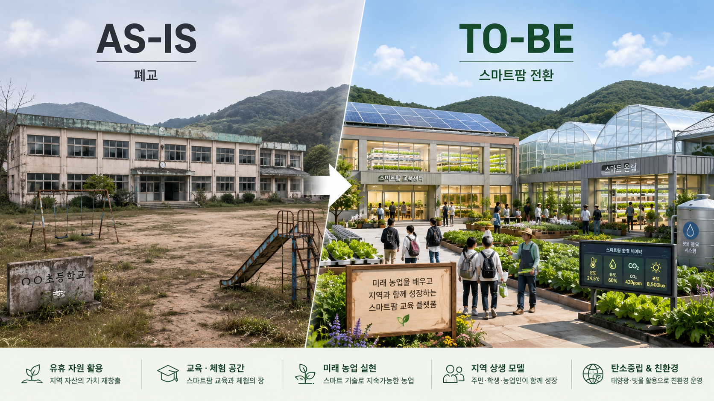

🌾
농업 인식 개선
아이들이 농업을 힘든 일로만 보지 않고, 기술과 데이터가 결합된 미래 산업으로 이해하게 합니다.
농촌의 폐교를 단순히 방치하거나 매각하지 않고, 농업·식량·에너지·물·생활기술·건강·공동체를 함께 배우는 자급생활 캠퍼스로 전환합니다. 농업은 시작점이고, 목표는 아이들이 살아가는 힘을 몸으로 배우는 것입니다.

“농사는 힘들다.”
“농촌을 벗어나야 한다.”
“회사를 다니는 게 낫다.”
스마트팜, 자동화, 데이터, 축산 시스템, 유통 플랫폼, 지역 브랜드가 결합하면서 농업은 더 이상 단순 노동만으로 설명되는 산업이 아닙니다. 소를 키우고 작물을 기르는 삶 역시 회사 생활과 다른 방식의 여유와 자율성, 그리고 충분한 경제성을 가질 수 있습니다.
지식 전달은 온라인에서도 가능해졌습니다. 하지만 또래와 만나고, 자연과 생산을 경험하고, 지역사회 속에서 책임감을 배우는 일은 여전히 물리적 공간이 필요합니다.
아이들이 농업을 힘든 일로만 보지 않고, 기술과 데이터가 결합된 미래 산업으로 이해하게 합니다.
학생 수 감소로 비어버린 학교를 지역의 교육·체험·생산 거점으로 되살립니다.
스마트팜이 지역 농가와 경쟁하지 않고, 교육·육묘·실증·유통으로 보완합니다.
이 프로젝트는 폐교를 농장으로만 바꾸는 제안이 아닙니다. 아이들이 식량을 만들고, 물을 모으고, 에너지를 이해하고, 생활도구를 고치고, 수확물을 나누는 과정을 통해 삶의 기반 구조를 직접 배우는 캠퍼스입니다.

농업은 아이들이 가장 먼저 만나는 생산 경험입니다. 여기에 에너지, 물 순환, 의식주, 응급처치, 수리와 제작, 지역 공유 마켓을 붙이면 학교는 단순한 교육시설이 아니라 다음 세대의 생활 역량을 키우는 자급형 배움터가 됩니다.
교실, 운동장, 체육관, 울타리, 급식실까지. 기존 학교의 구조를 최대한 살리면서 생산과 교육이 함께 돌아가는 캠퍼스로 전환합니다.
농업은 출발점입니다. 이 캠퍼스에서 아이들은 의식주, 에너지, 물, 건강, 공동체까지 서로 연결된 삶의 기본 구조를 몸으로 익힙니다.
농업을 직업으로 선택하지 않더라도, 먹거리가 어디서 오고 지역 산업이 어떻게 돌아가는지는 누구나 이해할 수 있어야 합니다.
먹거리는 마트 진열대에서 시작되는 것이 아닙니다. 땅과 물, 빛, 기술, 사람의 손이 함께 만들어내는 결과입니다. 폐교형 자급생활 캠퍼스는 아이들이 작물이 자라고 수확되고 식탁에 오르는 과정뿐 아니라, 물과 에너지, 생활기술이 어떻게 연결되는지 몸으로 이해하게 하는 생활형 식량 안보 교육 인프라가 될 수 있습니다.
폐교가 방치된 공간에서 끝나는 것이 아니라, 아이들이 식량·에너지·물·생활기술을 함께 배우는 자급형 미래 학교로 바뀌는 장면을 시각화했습니다.

아이들이 어릴 때부터 농업을 보고, 물과 에너지를 이해하고, 생활도구를 고치고, 수확물을 나누며 자라면 농촌은 더 이상 떠나야 할 곳만이 아닙니다. 폐교형 자급생활 캠퍼스는 다음 세대에게 식량과 생활의 기본을 다시 보여주는 새로운 학교 모델입니다.